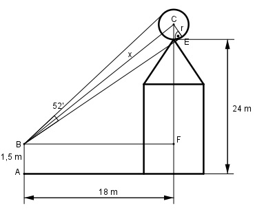
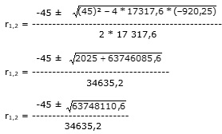

Aufgabe 83 Ein Beobachter (Augenhöhe 1,5 m) sieht unter einem Winkel von 52' auf einem Kirchturm eine Kugel, die sich in einer Höhe von 24 m befindet. Er selbst ist 18 m von der Turmmitte entfernt. Wie groß ist der Durchmesser d der Kugel?

26 26’ = ----° = 0,4333° 60 Im Dreieck BEC: r sin 0,433 ° = --- | *x x x * sin 0,4333° = r |:sin 0,4333° r r x = ------------- = -------- = 131,6 r sin 0,4333° 0,0076 Satz von Pythagoras im Dreieck BFC, rechter Winkel bei F: x2 = (24 m – 1,5 m + r)2 + (18 m)2 (131,6r)2 = (22,5 m – r)2 + 324 m2 17 318,6 r2 = 596,25 – 45r + r2 + 324 |-r2 17 317,6r2 = 920,25 – 45r2 | + 45r2 17 317,6r2 + 45r = 920,25 | -920,25 17 317,6r2 + 45r – 920,25 = 0 A,B,C – Formel: A = 17 317,6; B = 45 ; C = -920,25
-45 ± 7884,2 r1,2 = --------------- 34635,2 7839,2 r1 = ----------- = 0,226 m --> 34635,2 d = 2 * r * 2 * 0,226 m = 0,45 m -7929,2 r2 = ----------- = - 0,228 m 34635,2 keine Lösung negative Länge